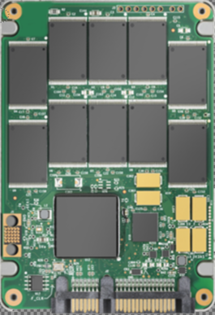

Hardware and Construction
SSD stands for solid state drive. Flash memory and integrated circuit
assemblies work in tandem to store data persistently with no moving parts.
This makes them much more resistant to physical shock than a traditional HDD.
Because they are a newer technology, SSDs cost more per GB than a HDD.
Transfer Speeds
This is the area where SSDs shine above a HDD. The average transfer speeds of a Sata SSD are around 400MB/s-500MB/s.
If it is a NVME SSD that plugs into the computer's motherboard, speeds could approach 7GB/s. That kind of blistering speed has led to SSDs becoming the new standard for personal computers.